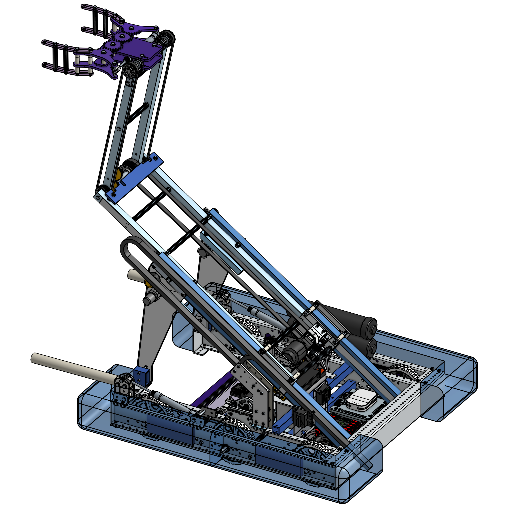
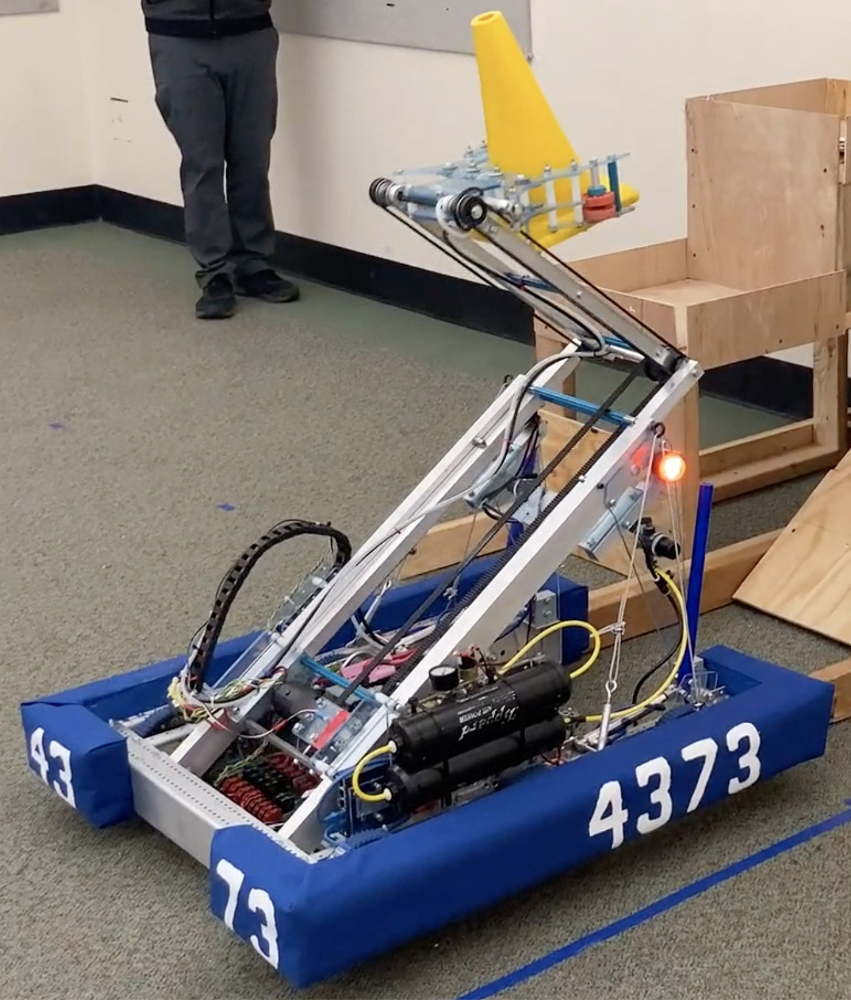

This year the game involved picking up traffic cones and inflated cubes... two very different objects. The team spent a lot of time discussing how this could be done: a different intake dedicated to each type of object? Should we be able to pick up a cone from any orientation or only upright cones? Should be count on getting them only from the loading station or should we be able to pick them up off the floor? All of the game requirements can be seen here: https://www.youtube.com/watch?v=0zpflsYc4PA

The 2022-23 AFS Robotics CAD model, done in Onshape.

The robot as built matches the CAD 100%.
The design was led by a student who had taken great initiative over the summer to learn CAD. He figured out the geometry needed for the fully retracted arms to be at floor level while also able to reach the highest objective when extended, and to be able to rest at the correct height for the loading station. It was wonderful work to do all that and also fit it within the robot's perimeter. I had some concerns about the amount of force it would take to rotate and control the upper segment of the arm, and the large moment caused by the accelerating arm did turn out to be a challenge.
The pincer used only a single pneumatic piston to keep the mechanism as simple and light as possible. The belts act as a parallel link to keep the pincer horizontal as the arm rotates.
A custom pivot piece made to properly orient the air hoses in the tight space.
The first way to address it was the design goal of minimizing the weight at the end of the arm. The pincer was as slight as we could make it, with one piston to open and close the jaws and plastic gears to do so symmetrically. The upper arms were made of thin-walled aluminum extrusion, and belts instead of chain were used to keep the pincer horizontal. The one extravance in the weight budget was to make the 'fingers' of the pincer easily replaceable in case they were damaged (although the entire assembly could be replaced by removing two bolts and two air hoses).
Another strategy used to deal with the stress on the upper arm pivot was to drive it with a long belt and mount the motor with a means to easily adjust the belt tension. This choice meant we could strike the balance between driving the arm effectively versus destructively. If ever the load of the arm exceeded the limits of the mechanism, the belt would skip before anything broke. This did end up happening in the mêlée of competition (impacts with other robots or playing field objects) and even during exuberant driving practice (the wrong combination of laden arm movement and robot acceleration).
Accepting that the belt would skip meant the upper arm position could no longer be sensed based on the motor rotation, so we mounted an absolute encoder at the point of rotation to capture a direct reading.
A low center of gravity is always good, so once again as much as possible of the heavy equipment was mounted low to the ground. In fact, the only somewhat heavy part not mounted within 8" of the ground is the upper arm rotator motor, because it had to travel with the middle arm as it extended. Even that was mounted as low as possible on the middle arm.
Best practices we'd been developing over the past couple of years were followed. Thorough planning, prototyping, a complete CAD model, and a second chassis test bed allowed for concurrent work, and dramatically reduced stress levels. There was time for the software team to do their work properly, testing and tuning arm position presets, an automatic balance routine, and an excellent autonomous routine. There was time for the drive team to practice.
The team's efforts resulted in even greater success, as they were again alliance captains at both regional events and advanced to compete at the district level. And this year, they did well enough there to advance to the world championship competition in Houston. See matches at https://www.thebluealliance.com/team/4373/2023
Design features:
• Three segment arm retracts and rotates to fit within robot perimeter, but can also extend and rotate to reach all desired positions
• Middle arm is extended by a low slung motor and chain that rides inside of one of the stationary lower arms for safety and protection
• In addition to reaching all desired targets, pincher can be retracted into robot to protect game piece during transit
• Battery, compressor, extender motor and drive motors located as low as possible to offset the mass of the arm assembly
• Drive chassis powered by six high performance motors and high ratio gearbox for best balance of torque and speed
• All electronics, pneumatic valves, and non-integrated motor controlers installed in two central areas for easy access and troubleshooting
• Dead simple mechanism for righting a prone cone: 12" PVC pipe deployable at the exact height to catch the rim of the cone as the robot turned